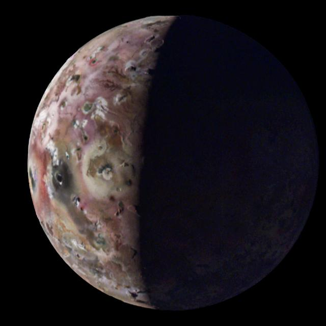
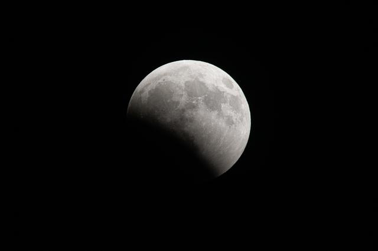
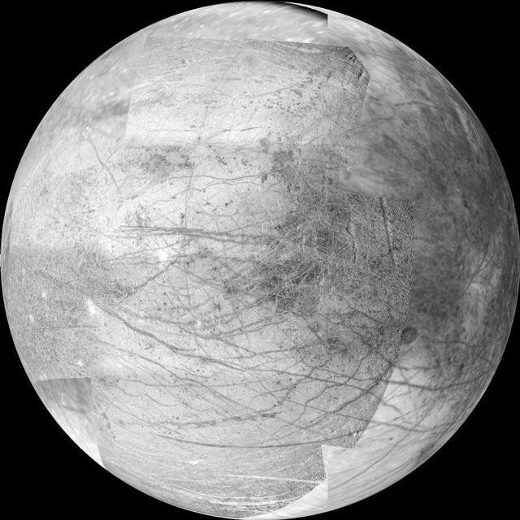
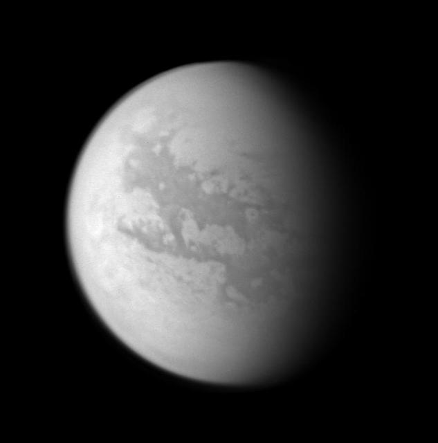

Moons
Io, Earth's Moon, Europa, and Titan are four of the most fascinating of the more than 400 known moons in the solar system.
A moon is a natural satellite that orbits a planet or a dwarf planet. Moons range from tiny captured rocks to worlds larger than Mercury. Some, like Io, are covered in volcanoes, while others, like Europa and Titan, may hide oceans beneath their surfaces.
Choose a moon below to see its facts, or use the table at the bottom of the page to compare all four.
Choose a Moon
-

Io
The most volcanically active world in the solar system, with lava lakes and sulfur-colored plains.
-

Earth's Moon
Our nearest neighbor and the only world beyond Earth that humans have walked on.
-

Europa
An icy world that hides a global ocean of salty water beneath its cracked surface.
-

Titan
Saturn's giant moon, with a thick orange atmosphere and lakes of liquid methane.